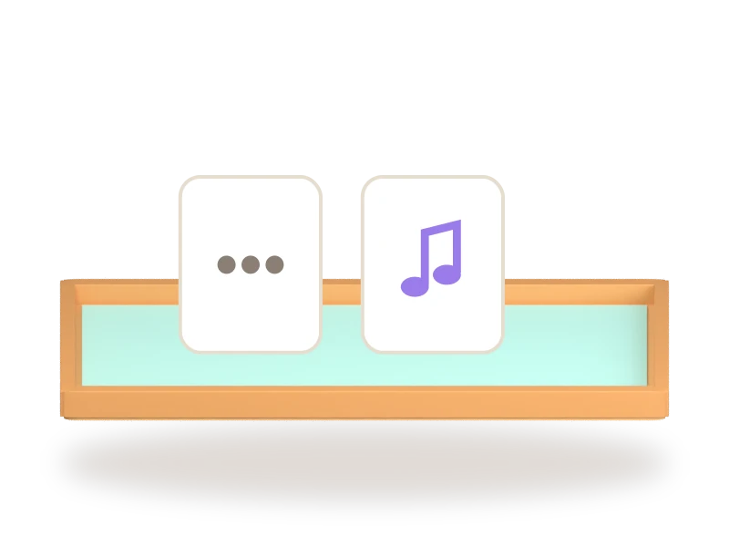
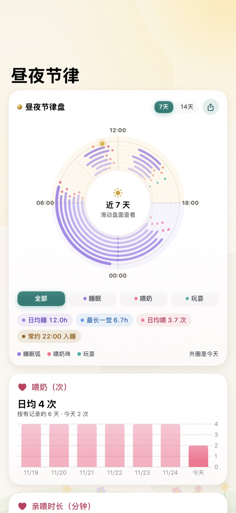
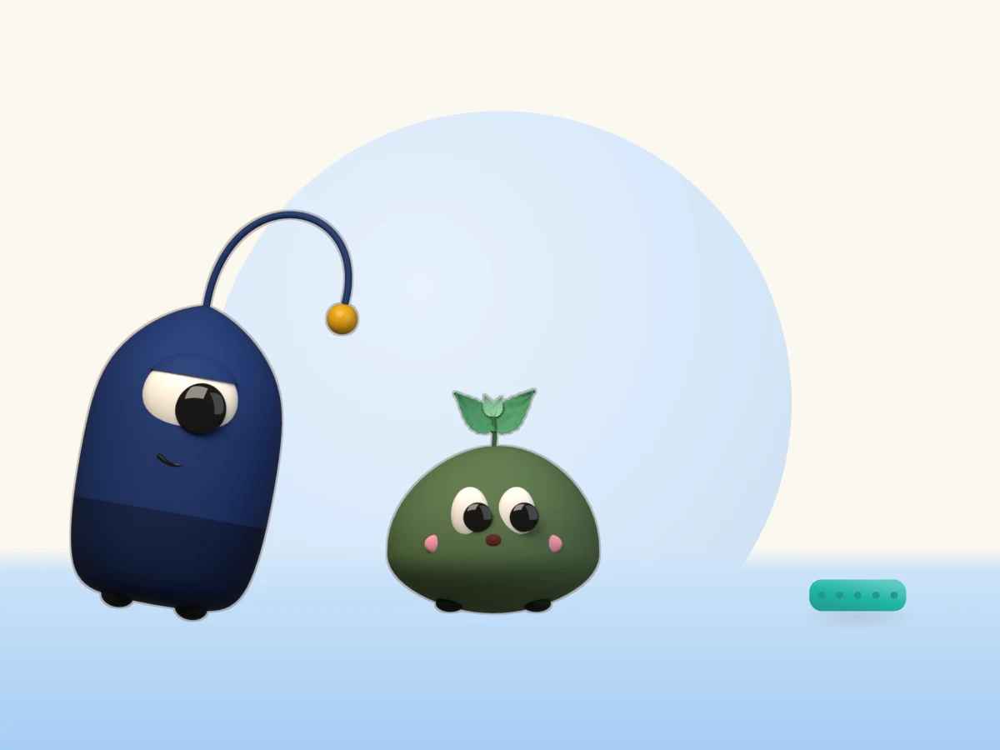
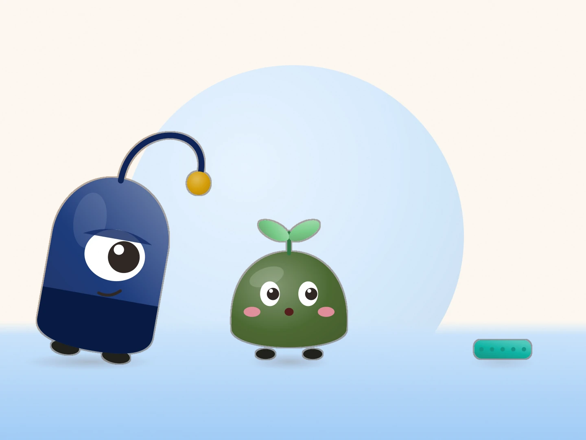
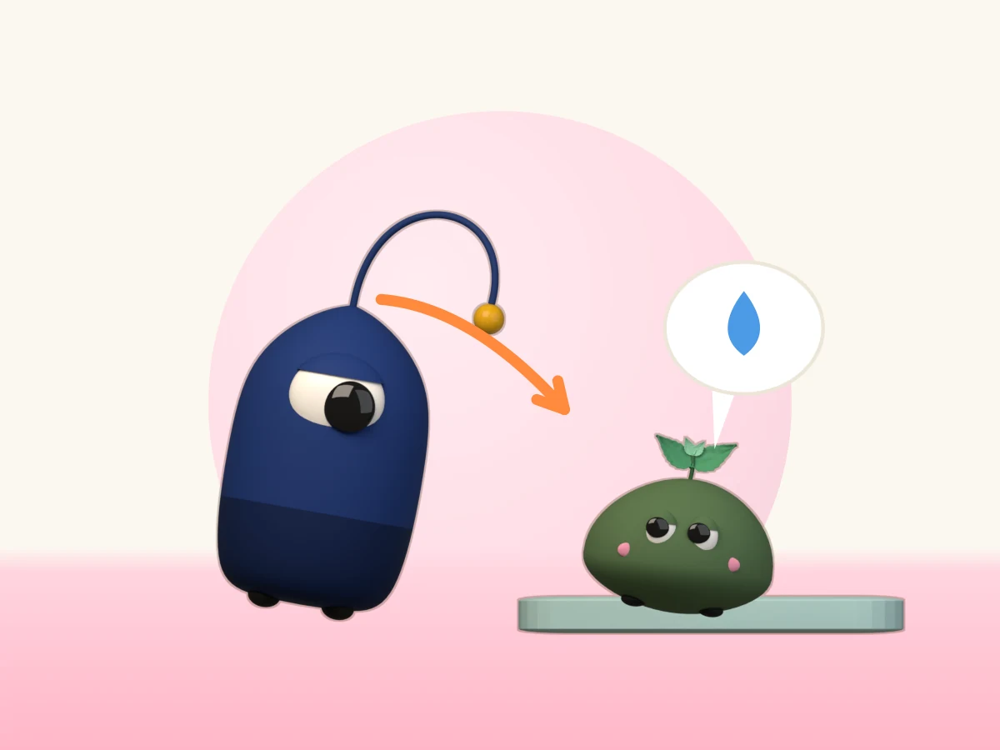
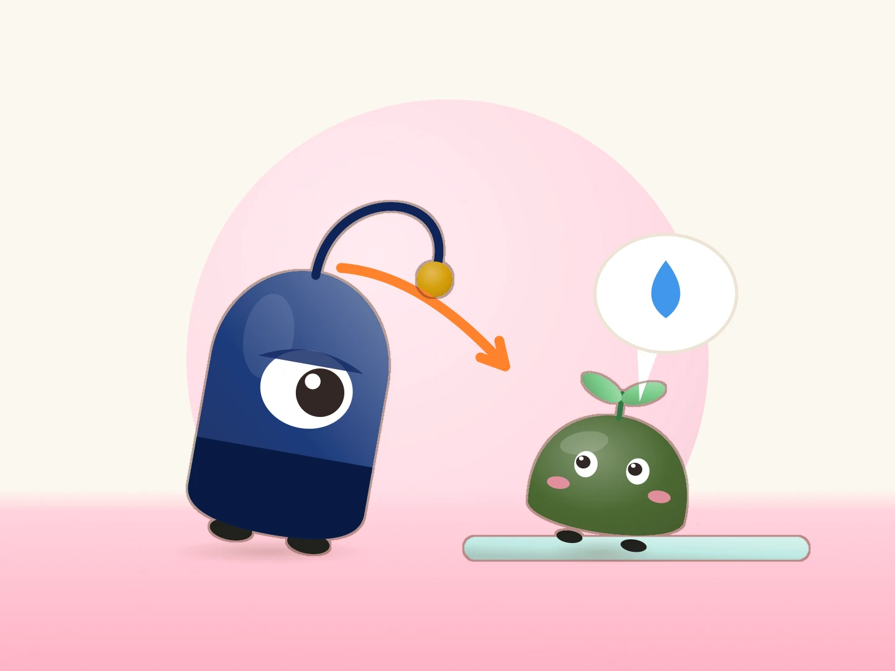
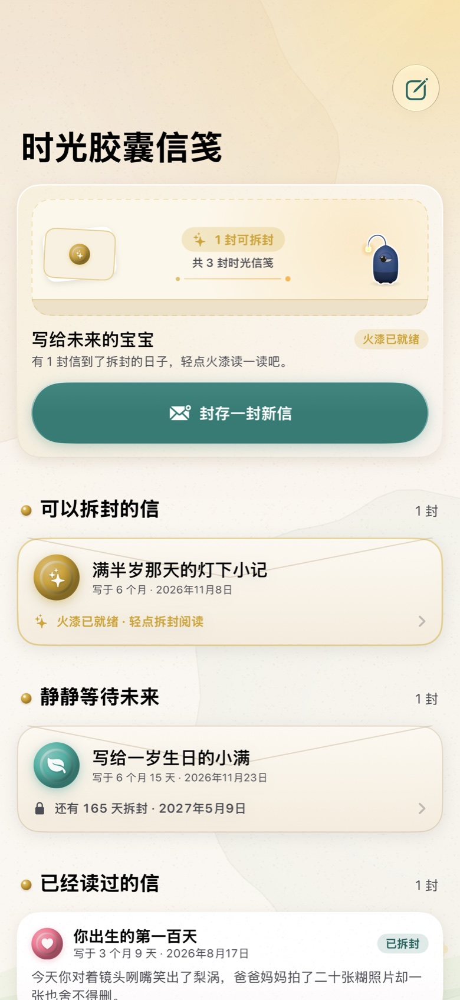
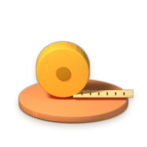
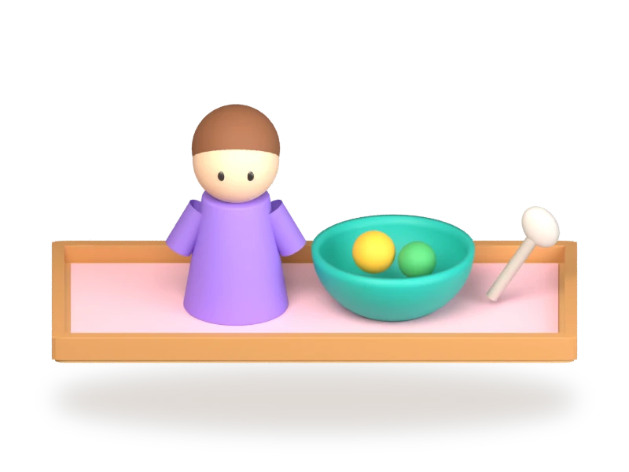

贴合月龄，随手就能玩
覆盖出生到 36 个月共 37 个发育站点，只需毛巾、纸杯、积木等家中常见物件，每周推荐恰当的一组玩法。
一套专为 0–36 个月家庭打造的原生 iPhone 陪伴应用。46 部 Pixar 3D 与吉卜力 2D 双画风分步玩法、凌晨三点单手可达的无声轻拍夜灯，以及绝不上传任何家庭信息的纯离线记录。


没有打扰注意力的红点与社区焦虑，把屏幕还给地垫上的真实亲子互动。

覆盖出生到 36 个月共 37 个发育站点，只需毛巾、纸杯、积木等家中常见物件，每周推荐恰当的一组玩法。

拉动金珠即可切换夜灯模式，纯静音掌心轻拍柔震配合 6 种纯离线实时合成环境音，黑夜里不刺眼、不出错。

不请求位置、相机与通讯录权限，无任何第三方统计或广告 SDK。一次买断即可享用全部功能与未来本地备份导出。
以下画面全部直接采集自摸索台灯 iOS 2.0 正式引擎渲染输出。
日光棉纸与三层光晕舞台。向下轻拉 Otto 头顶的金色灯珠，画面会在 3D 软陶与 2D 水彩之间流淌切换。

告别繁琐的逐页点击。单指滑动下方实体桦木滑珠，就能像翻真绘本一样连续演出每一步的动作分解与光影变化。

汇集木琴、Otto 光影手影墙、雨声金珠棒、萤火虫与黑白高对比视卡五间安静小室，随附绿色护耳安全音量提示。

6 种纯离线实时合成声景（支持双层混音渐弱）搭配严格零声音的 60/54/48 BPM 掌心柔弹震动，黑夜单手一按即用。

60 种纯手绘蔬果谷物，替代第三方 Emoji。轻松标记初次尝试、喜爱程度、温柔再试与常见致敏提醒。

不用死盯冰冷数字表格，环形节律盘一眼看懂近 7 天或 14 天里睡眠弧、喂奶珠与白天玩耍的时间分布。

跟随视野落点伸手够取玩具，建立手眼协调与因果期待。

用指尖停在画面上命名日常物件，顺着孩子的视线慢下来等待回应。

在平行的游戏空间里交换小道具，温和练习等待与表达需要。

把马路横道线搬进客厅地垫，用身体记住停下等待信号的小规则。




全部 46 部独立舞台都共享同一套 1:1 物理地面坐标与灯珠光锥锚点。无论是温润立体的 Pixar 3D 软陶，还是清透留白的吉卜力 2D 水彩，每次轻拉灯珠切换都会保持动作连续不跳帧。
点击下方状态按钮或切换房间光线，看看原版 iOS 角色在日光地垫与暖光夜灯下的不同神态。

头顶双叶、圆润好奇的小家伙。总是坐在地上先伸手试试，代表孩子对世界最原初的探索欲。
不插手替办、只用弯颈与一粒暖黄灯珠把地上照亮的大人，在孩子身旁守住温柔又笃定的安全边界。
在白天日光屋景与夜晚暖黄床头灯景之间切换（使用原始舞台美术资源）。

天黑之后打开夜灯，全站沉入低对比的深海蓝 `#0E1430` 与琥珀金光，不打扰睡意。
无需连网即可实时合成轻雨、海浪、母胎心音与摇篮曲并自带护耳音量上限；不想出声时，单靠掌心静音柔震就能延续安抚节奏。
记奶量与亲喂左右侧、睡眠计时与排便状态。计时器会在锁屏实时活动与 StandBy 床头待机中安静续走，绝不外泄敏感情节。
包含雨声木珠棒、风铃、砂纸画板、翻牌与光影手影墙。所有触摸响应都在 120Hz 原生 SwiftUI 与 Metal 材质中即时反馈。
从辅食过敏观察、WHO 生长百分比到工坊单屏驾驶舱，常用能力一屏可达、不迷路。

默认折叠 37 个月龄驿站不制造冗长滚动，点击「现在」或任意一片土地即可定位本月关注点与第一次相纸。

每个月自动凝练一张纸面纪念页，收录首次动作照片、共玩过的活动次数、新尝味道与体重身高平均值。

把半岁夜里的絮语或百天纪念封入离线金色火漆，静候约定的拆封日期到来时轻点开启。全部信笺可随 JSON 导出备份。

WHO 世界卫生组织 0–36 个月生长曲线
46 部独立活动全量覆盖 · 0 第三方表情符号摸索台灯定位为温和的家庭养育参考伴侣，不诊断、不替代儿科医生或正规儿童保健随访。
生长身长/身高、体重、头围百分位依据世界卫生组织（WHO）公开标准本地计算，并对照中国、美国、英国、澳大利亚常见儿保随访节点。
参考美国疾控中心（CDC）发育观察里程碑、美国儿科学会（AAP）早期养育指引，支持为早产宝宝自动换算矫正周数。
整合国家卫生健康委婴幼儿养育照护与辅食添加指导建议，应用内「内容来源」页逐条列出文献出处，不做夸张推销。
从诞生第一天起，摸索台灯就坚持零服务器架构。我们没有后台数据库，不知道你是谁，也不搜集任何宝宝照片、体重或睡眠节律。
关于收费方式、数据安全、画风切换与适龄范围的简要解答。
不需要。摸索台灯彻底离线运行，没有服务器，也没有账号系统。下载后填入或跳过小名与出生日期即可直接开始陪伴。
摸索台灯在 App Store 采用一次性买断方式提供，不含广告、不含订阅扣费、也没有后续付费解锁墙。
全部 46 部绘本活动、分步指导文字、交互节拍与照护记录功能在两种画风下完全一致；只需向下拉动首页或工坊中的 Otto 金珠，即可在两种手感与材质之间柔和转换。
在宝宝资料或工坊设置中填入出生日期与出生孕周后，应用会依据美国儿科学会习惯自动展示矫正后的月龄与活动建议。
进入「工坊 › 离线数据与备份」即可导出完整备份文件保存到「文件」App（或随时导入恢复）；若手机开启了系统 iCloud 设备整机备份，也会一并安全保留。